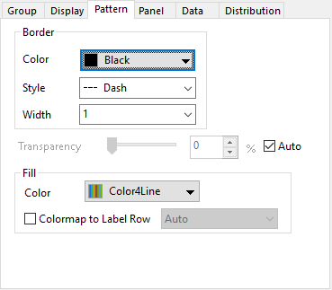
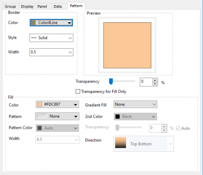

Diese Registerkarte Muster wird verwendet, um zu steuern, wie die jeweiligen Verteilungslinien und Flächen gefärbt werden.
|  |  |
| Registerkarte Muster für Verteilungskurven | Registerkarte Muster für Balkendiagramm mit Einzelblock |
Passen Sie die Verteilungskurven oder den Rahmen von jedem Balken mit Einzelblock benutzerdefiniert an.
Legen Sie die Rahmenfarbe auf eine einzelne Farbe oder eine Farbliste gest, die auf die Zeichnungen angewendet wird.
Legen Sie den Linienstil der Verteilungskurven oder des Balkenrahmens fest.
Legen Sie die Linienbreite der Verteilungskurven oder des Balkenrahmens fest.
Passen Sie die Transparenz der Verteilungskurve/ des Balkenrahmens und der Füllfläche an.
Legen Sie fest, wie die Fläche oder der Balken gefüllt werden soll.
Für das Ridgeline-Diagramm mit Verteilungskurven können Sie dieses Bedienelement verwenden, um die Füllfläche unter den Kurven benutzerdefiniert anzupassen. Ein zusätzliches Kombinationsfeld Farbabbildung auf Beschriftungszeile erlaubt Ihnen, die Farbabbildung auf die Füllfläche entsprechend der Werte in der festgelegten Spaltenbeschriftungszeile anzuwenden.
Beim Ridgeline-Diagramm mit Einzelblockbalken können Sie die Balkenfüllung benutzerdefiniert anpassen wie beim Histogramm